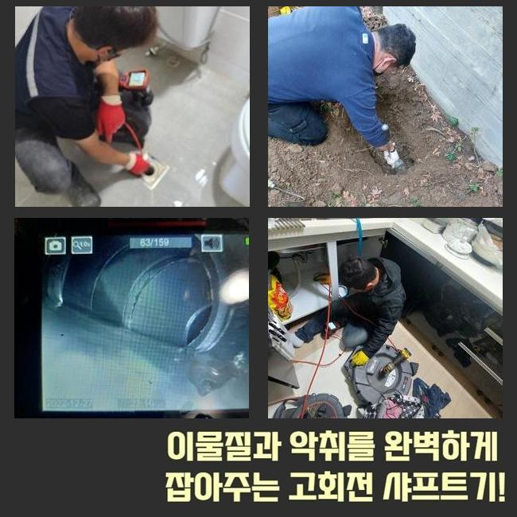
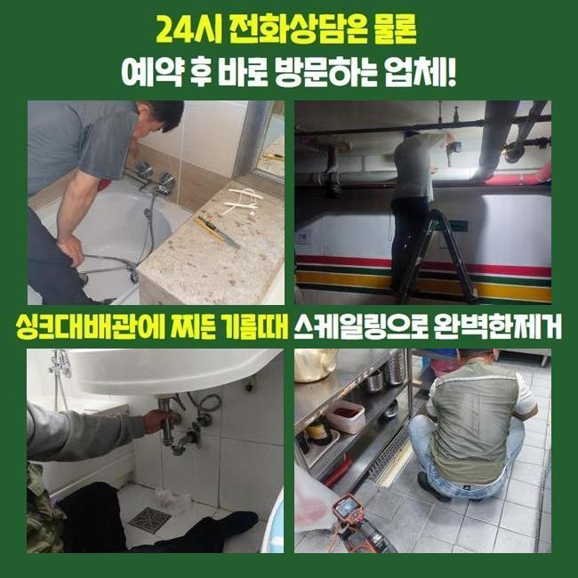
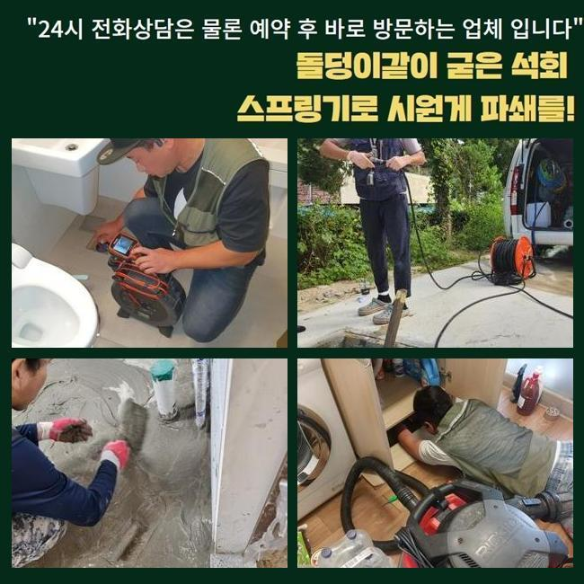
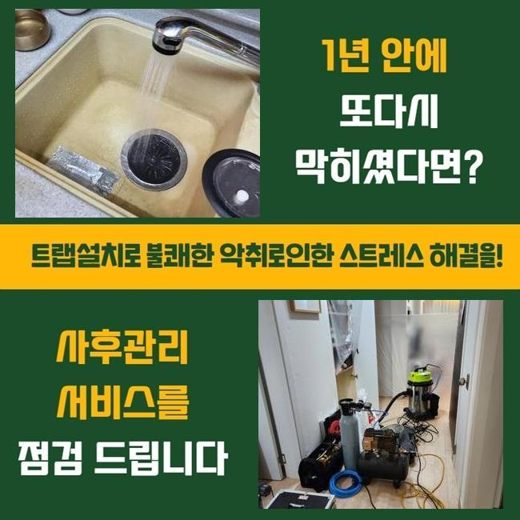
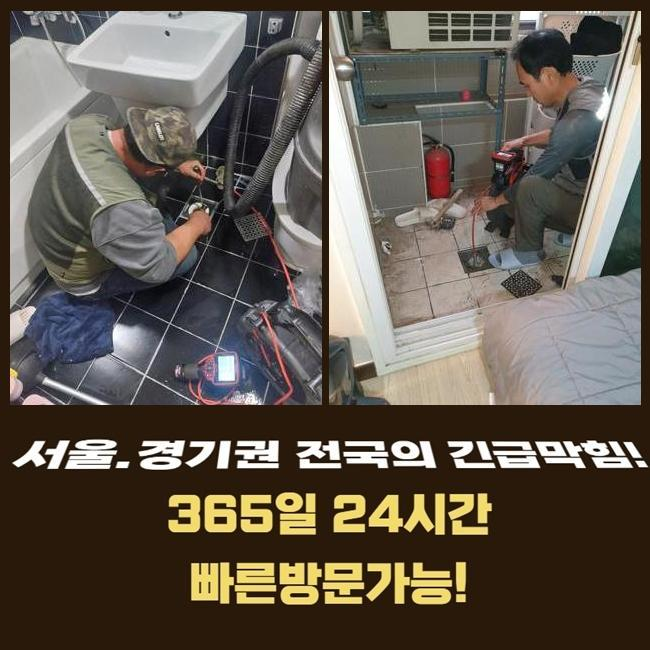
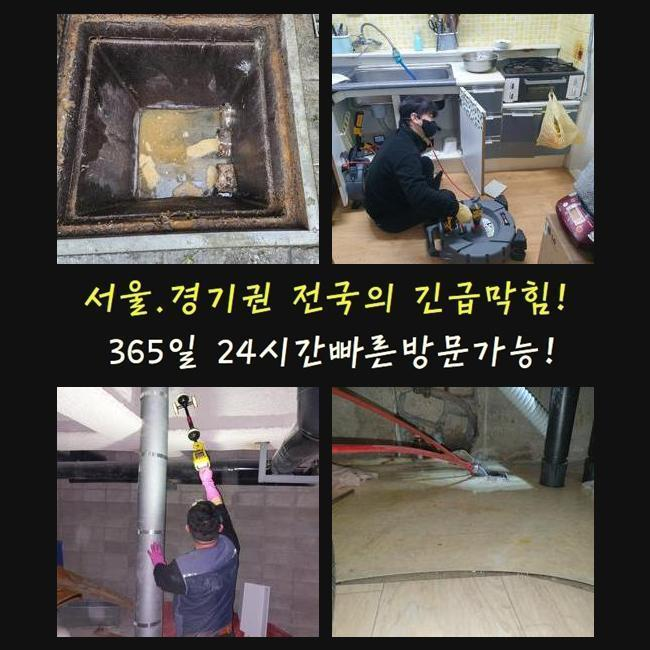

🏠 동대문 답십리동하수구역류 이문동 하수관고압세척 해결방법
용인 하수구막힘 전문 시공 후기

📋 작업 개요
- 위치: 용인
- 서비스 유형: 하수구막힘, 배관막힘, 역류해결, 뚫는업체, 배관청소, 고압세척, 설비공사, 악취차단
- 작업 일시: 2025. 2. 19. 13:04
- 업체명: 하수구수사대 (010-5615-2118)
🔍 문제 상황
동대문 답십리동하수구역류 이문동 하수관고압세척 해결방법
어제는 나홀로아파트 단지내부에서 우수배관의 문제로 역류가 생긴다는 의뢰를 받게되었는데요
고인물이 우수설비로 흘러들어가지않고 도리어 넘치는 바람에 주변환경이 더러워지고 벌레들도 꼬인다고 하셨죠
과거에도 이번과 같은 증상이 나타났었는데 최근 일주일간 강우량이 많았기에 더더욱 심각해졌다고 설명해 주셨어요
이로 인해 아파트단지 내부에 구린내도 많아졌고 주민분들의 불편함도 증가하게 되었던거죠
세척을 즉각적으로 해달라고 요구하셨고 이에 저흰 지체없이 시공준비에 착수하였죠
장소를 찾아보니 저희가 자주 지나치는 곳이었어요
고객님에게 바로 이동해드리겠다고 알려드린뒤 공구들을 확인하고 출발하게 되었어요
현장에 당도하니 아파트 관리사무소 바로옆에 우수배관이 있었어요
근처로 이동하니 나뭇가지와 비닐 등이 많았고 앞에서 체크해보니 이를 치우기위한 청소용품이 놓여 있었죠
역류증상이 심각해지면서 청소직원분이 상시로 그것들을 정리해나가셨다고 하십니다
그래도 정황은 나아지지 않았기에 즉각적인 수선을 바라셨던 거예요

🔎 원인 분석
💡 전문가 진단: 정밀 진단 장비를 사용하여 슬러지의 고착 여부를 판명하고 타격/세척 작업을 실시했습니다.
우수관로는 본래 낮은곳으로 비가 집중될수 있게 건설되어야 합당하겠지만 이 현장은 주변부와 유사하게 공사진행이 되어 역류가 증가하게 되었답니다
그부분을 처치하기 위해선 굴토과정을 거쳐야 마땅했지만 고객님에게서는 그 부분은 한달정도 뒤에 계획해보자고 하시면서 우선 뚫음부터 해달라고 요청설명해 주셨어요
우수설비의 막힘양상을 직접적으로 진단해보니 흙이나 낙엽들도 있었으나 플라스틱 잔재 등도 상당했어요
그것으로 관로가 차단되었고 역류증상이 나타날 지경까지 정황이 악화된것이죠
이에 대해 가정내에서 우수설비로 생활하수를 보낼수 있는 상황인지 물어보았는데요
일부주민들이 베란다 청소를 위해서 쓰고 계시다고 말하셨답니다
이러한 것들에 대해서 자주 주의말씀을 드렸지만 적절히 실행되지않는 상황이었죠
그내용을 개선못하면 거듭해서 역류가 일어날수가 있단 사실을 고지해드렸고 관련한 대책을 취하기로 하셨어요
우수시설을 열어봤더니 고인물이 제대로 빠지지 않았다는게 쉬이 확인됐어요
배수시설 주위에 찌꺼기들이 굉장히 많았기에 시공에 임하기 어려웠답니다
거기에 더해 관로속에 들어간 잔류물도 상당하였고 부피도 컸기에 간소한 장비로 처치하기엔 역부족이었습니다
이때문에 저희팀은 배관스프링 청소장비로 강력하게 세척해주는 방안을 선택하게 되었어요
우수관로 주위가 비좁은 상태였고 보슬비가 내리고 있어서 공정을 이행하기 까다로웠는데요

🔧 작업 과정
그런 상황에서도 거주자분들의 고초를 줄여드리려 바로 공정을 실행했답니다
내시경카메라는 관로안을 체크하고 이물의 양을 확인하는데 핵심적 역할을 해주죠
이것으로 디테일한 막힘상황을 정밀하게 파악가능하며 통수시간을 절용할수가 있었답니다
그와 함께 배관스프링 청소기를 통해 세척하는 공정이 시행되었고요
특정 배관의 경우에는 거름장치가 없어 찌꺼기들이 손쉽게 흘러드는 형국이 빈번하게 나타나죠
그러면 이물이 누증되고 결국은 관이 차단되어 역류증상이 발발하거나 세균이 증식할 여지도 올라가게 됩니다
이것을 사전에 차단하려면 주기적인 관리가 요망되고 잔재들이 못 들어가게끔 망을 놔두는일도 필요하답니다
그것들과 관련해서 고객께 설명해드렸으며 또 외부환경에 많이 노출된 관로일수록 한층 관리해나가야 한다는 것도 강조하였습니다
세척을 실시하면서도 우수관 벽면에 균열이 없는지 물이 새는 부분은 없나 빈틈없이 검사했어요
이러한 과정으로 추가적 문제를 예방하고 주민들의 안녕을 만들어드릴수 있답니다
커다란 잔재들을 들어낸 다음에도 관로의 벽면엔 아직껏 오염물질들이 체류중이었어요
그것을 처리하려 플렉스샤프트 기기를 가동하였어요
플렉스샤프트 분쇄기는 재빠르게 움직이는 체인을 활용해서 관로면에 접착된 슬러지들을 분쇄하는 용도로 강한 회전력을 바탕으로 말끔하게 침전물들을 소제할수 있죠
거기에 더해 배관면을 파손하지 않기에 사고의 위험이 적다는 특징이 있죠
보슬비가 멈추었고 바닥부근에 있던 물기를 처치하려 석션기기를 통해 공사를 마쳤답니다
분쇄장비로 파쇄한 물질들을 여러차례 석션장비로 소제하면서 완전무결하게 트러블을 정리할수 있던거죠
의뢰인의 고통을 줄여드리려 끝까지 최선을 다해 시공을 하니 배수관은 이전과같이 빗물이 빠지는 상태로 뚫렸죠
이같은 시공으로 말끔한 우수파이프를 유지해나가는 일이 불가결한 일이라는걸 거듭하여 상기하게끔 해드렸죠
관로가 정체된다면 간단히 불편함으로 마감되는게 아니고 더더욱 심중한 정황으로 진행될수 있어 수시로 청소하고 관리하는 일을 다시한번 말씀드려요
특히나 이곳은 배수처리 장소의 설비가 높은위치에 자리잡고 있었기에 더욱 세심하게 청소해야 한다는 것또한 설명해 드렸어요


✅ 작업 완료
고객님에게서는 배관 내시경 이것으로 세척된 결과물을 즉시 확인하셨으며 공사를 마친뒤엔 다량의 물로 뚫음상태를 시험하게 되었답니다
이런식으로 단지안의 우수배관의 막힘을 정리하였고 역류증상까지 확실히 정리됐죠
신경쓰기 까다로운 우수파이프나 횡주관로의 정체상황도 전문업체를 통해서 세세히 조사하고 세척받아 보시길 바라요
여러분들의 배수설비에 막힘이 생기지 않길 기원합니다
혹여 역류등이 생긴다면 망설이지말고 전화해주세요 신속하게 이동하겠습니다




⚠️ 하수구 배관 막힘 예방 및 관리 가이드
- ✅ 머리카락, 비닐, 물티슈 등 물에 분해되지 않는 이물질은 하수구 유입을 절대 금지해 주세요.
- ✅ 하수구 거름망을 씌우고 모여진 이물질은 주기적으로 쓰레기통에 바로 비워주셔야 합니다.
- ✅ 배관 노후가 심할 경우 이물질이 더 쉽게 걸리므로 주기적인 배관 세척(고압세척 등)을 권장합니다.
- ✅ 작업 후 1년 이내 재발 시 하수구수사대에서 무상 A/S 보증 서비스를 제공합니다.
💡 핵심 정리
- 확실한 장비 작업(내시경 점검 및 샤프트 스케일링)으로 원인을 뿌리 뽑습니다.
- 작업 후 1년 이내에 동일한 부위 재발 시 100% 무상 A/S 서비스를 보장합니다.
- 서울 · 경기 · 인천 전 지역에 24시간 언제든 긴급 출동할 수 있도록 항시 대기 중입니다.
❓ 자주 묻는 질문 (FAQ)
🚨 용인 하수구막힘 문제로 고민이신가요?
정확한 원인 진단과 확실한 시공으로 재발 없는 해결을 약속드립니다.
24시간 긴급 출동 | 서울 · 경기 · 인천 전지역 | 1년 내 재발 시 무상 A/S